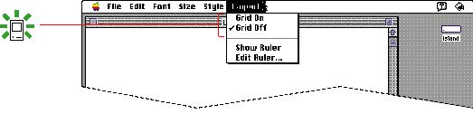
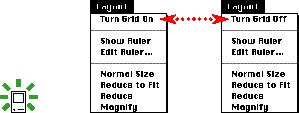
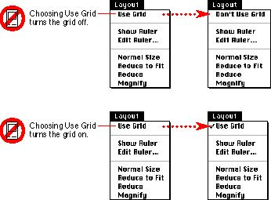
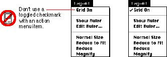

|
Toggled Menu ItemsA toggled menu item changes between two states each time a user chooses it. It's like a toggle light switch, when you flip it one way, the light turns on. When you flip the switch the other direction, the light turns off.There are three types of toggled menu items. In one type, there is one menu item and its name changes to reflect the current state of the item. An example of this type is the command Show Ruler, which changes to Hide Ruler when the ruler is visible in the document. Another type of toggled menu item has one menu item that has a checkmark next to its name when it is in effect. An example of this type of item is a style attribute like Bold. The third type of toggled menu item has a group of two menu items that are opposite states. The state currently in effect has a checkmark next to its name. If you have room in your menu, it's a good idea to use
two menu items Figure 4-30 A set of toggled menu items  If you don't have room in your menu for two items, you can use one item (which describes a specific action) and change its name to the opposite action when it's chosen. When you use a toggled menu item that is only one item, you must be sure that the name of the command is completely unambiguous. The command names should be verbs that express opposite actions. In the previous example, you could change the phrase Grid On to Turn Grid On. The command becomes Turn Grid Off in the opposite state. Figure 4-31 shows this solution. Figure 4-31 A single toggled menu item whose name changes  In this menu, Turn Grid On clearly means that the grid appears when the user chooses the command. Then the command name changes to a clear statement of what happens as a result of choosing the Turn Grid Off command. Try not to use phrases that could have ambiguous meanings. For example, does Use Grid mean that
Figure 4-32 An ambiguous toggled menu item  Don't use one menu item with a toggled checkmark to
indicate the presence or absence of a feature like a grid
or a ruler. It's unclear whether the checkmark means that
the feature is in effect or whether choosing the command
turns the feature on. In the example shown in Figure 4-33, Figure 4-33 An incorrect use of a checkmark to indicate a state  |